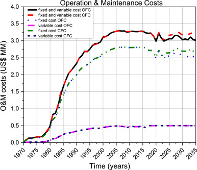

The primary objective of the French Nuclear Program is to supply 5000 MW/yr until 2034 before switching to a more advanced type of nuclear called a Closed Fuel Cycle. The problem is that France has a Limited amount of Uranium and the process of mining Uranium and processing it to be usable causes a lot of C02 to be released.
Positive - The positive impact of the Organization would be a more efficient nuclear power than the current Open Fuel Cycle system they are using now. This more efficient power would reduce the amount of carbon dioxide released into our atmosphere. The CFC allows you to recycle and reuse the uranium that is how they are reducing the amount of carbon released.

Negative - The change will be 22 years in the future until then there will be a large amount of pollution and the maintenance cost will stay relatively high amount. No other negatives.

Implications: We can use social media to spread information and help fund this new type of technology. Using a GoFundMe as a nonprofit we can raise the funds ourselves to create a nuclear reactor.
+ Source: https://www.sciencedirect.com/science/article/pii/S2211467X20300663